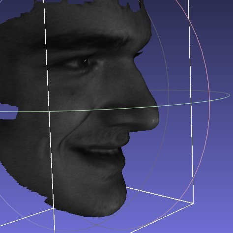
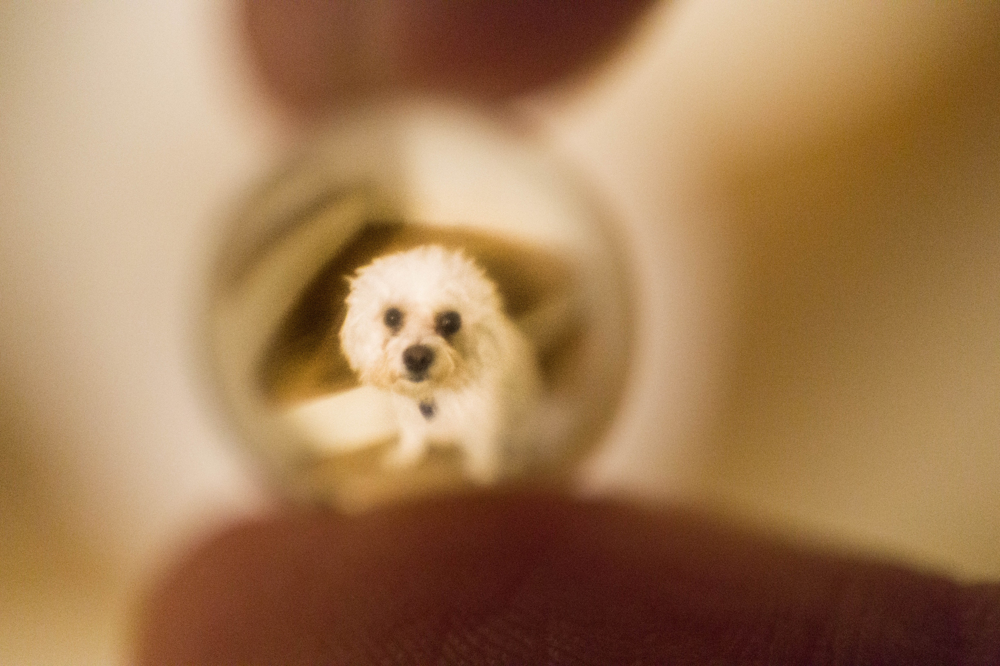

Introduction
Hello! Welcome to my website. I will be posting blogs about things I find interesting. I try my best to keep up to date in the latest research in Graphics. I discovered that I get more out of what I read when writing about it after. So thats why I write blogs. I am also trying to learn more about the process of research itself and I see blogging as an excersize to push me to grow in that sense.
I can’t promise a regular upload schedule because I am balancing this with my classes, but I will try my best.
This blog is dedicated to showing you who I am though. You won’t see much about my technical accomplishments here unfortunately because I want to keep this blog brief, and I feel my resume should be sufficient if you want my technical achievements. I will also primarily be writing about technical topics after this blog so you will get a good sense of my professional interests then.
My Creepy Profile Picture

Sigh, I got some explaining to do I guess… This profile pic is a 3D scan of my face that was taken when I was doing conformal mapping research with a professor and his team a few years ago. The first day I walked into this lab, his PhD student sat me down on a chair facing a few cameras. I had no idea what was going on. I figured they were taking my picture, but I didn’t know that they were getting a LiDAR scan of my face! You can see the utter confusion in my eyes above.
Its the initiation into the group. Every member of the team gets his/her face scanned. I knew from that moment on that this screenshot of my face in MeshLab had to be my profile picture. Ever since then, whenever I got the chance to bring a friend to the lab, I would always sit them down, tell them nothing, scan their face, and watch their reaction after. Its just so funny.
My Previous Blogs
Since the project I was on concluded, I have been spending my time writing blogs. I originally was on Medium, but they took away the ability to theme my blogs, like the one above, the way I wanted 😭. So I decided to make my own website with no paywalls or restrictions.
Other hobbies
I am an “artist”. In particular, I like photography, drawing, 3D modeling, and digital music production. Ill only show 2 of these here so I don’t drag out the blog for too long.
Music production
So.. this is now the part where I desparately plug my SoundCloud like a true professional. BUT WAIT, DONT GO! I promise it gets better from here!
I like making music because its one of the most abstract forms of art. When you draw something for example, you start that drawing with a goal: to make a coherent depiction of the object your trying to capture. This is not true for music though. You can come in with an idea, but thats different from a concrete objective for what your making. That makes this medium unique from the rest of them.
There are 2 musicians I think you should check out if your looking to learn digital audio production:
- Andrew Hwang: He is a YouTuber who makes a wide range of music. You may have heard of him, but if you haven’t then you really should check him out because his tutorials are excellent and I learned alot of what I know from him.
- Au5: He makes dubstep tracks. I don’t actually play instruments myself but I am familiar enough in synthwork and sound design. But he is one of the few artists who make sounds that I truely don’t know how to reproduce. He makes excellent breakdowns on YouTube of each of his songs though.
Photography
Graphics is my primary interest, but one of the reasons that I got into computer vision was because of photography. I probably burnt you out with my rant in the last section so I will just show you a bunch of photos I took:


Almost all my best photos are taken at sunset I think. Atleast in my opinion. But heres a photo that breaks the trend:

Conclusion
I showed you some of my hobbies, and blogging experience. Most of the blogs from here on are going to be technical, and alot more interesting in my opinion. But I figured it would be good to show you my personality a little in case your interested.
Till the next blog! 🐶